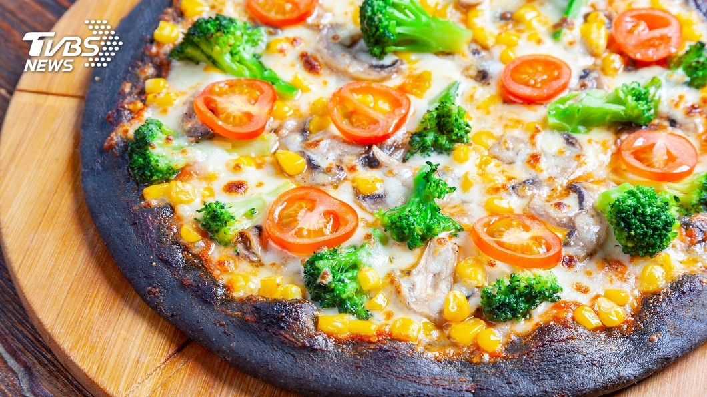

愛吃披薩的饕客注意了，日本披薩口味開始求新求變，有店家研發出有機蔬菜口味，
還有賣相驚人的黑色墨魚披薩，甚至還突發奇想，獻上披薩淋油上菜秀，
而第一家正宗義大利披薩分店最近正進駐東京，掀起朝聖熱潮。
日本披薩迷有福了，第一家正宗義大利分店最近正式進駐＿表參道，
午餐時間幾乎座無虛席。 顧客：「正統義大利口味。」 窯烤披薩有14款口味，
而店家的作法也很特別，因為送進窯裡的居然是什麼都沒有的餅皮，
烤膨後取出再切開，接著放上款起司，再來是番茄和羅勒葉，灑上起司粉，
最後闔上餅皮，再用雙手壓到緊實，正宗義大利披薩美味上桌。
記者：「餡料多，外皮酥脆，裡面軟Q，然後莫札瑞拉起司的綿密，還有燻製起司香氣也很濃。」
